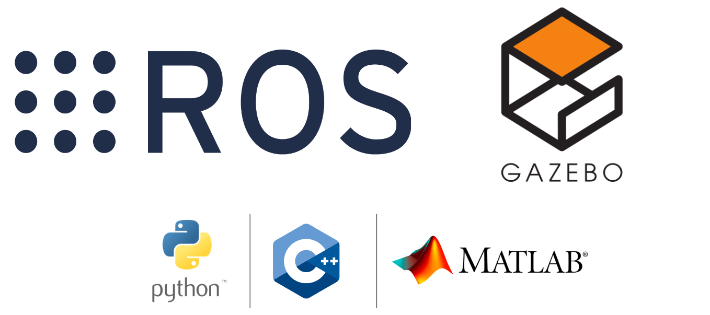
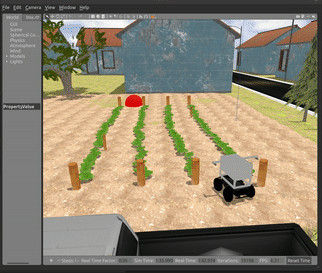

En passant avec ROS¶
Le Robot Operating System (ROS) est un cadre flexible pour l’écriture de logiciels de robot. Il s’agit d’un ensemble d’outils, de bibliothèques et de conventions qui visent à simplifier la tâche de création d’un comportement de robot complexe et robuste sur une grande variété de plates-formes robotiques.
Nous avons planifié ce concours autour de ROS en raison de ses fonctionnalités ainsi que de son utilisation répandue dans la recherche et l’industrie en robotique.

Pour démarrer avec ROS (si vous êtes débutant), nous vous recommandons de suivre les tutoriels “Niveau Débutant” dans les [Tutoriels ROS] officiels (http://wiki.ros.org/ROS/Tutorials). Assurez-vous de remplir au moins les éléments suivants :
ROS OnRamp !¶
Que vous soyez un débutant ou un développeur ROS plus avancé, nous vous recommandons de prendre le temps de consulter les didacticiels ROS suivants.
- Tutoriels officiels ROS - Assurez-vous de terminer au moins les chapitres 5, 6 et 12.
- Liste de lecture Youtube du tutoriel ROS (Fortement recommandé pour les débutants) - Sinon, nous vous recommandons de couvrir au moins parties 1-9. Le contenu est excellent !
Note
Votre expérience d’apprentissage globale dans ce concours dépend fortement de la quantité de concepts fondamentaux de ROS que vous pouvez saisir dès le début. Par conséquent, nous recommandons fortement que vous preniez le temps d’utiliser ces ressources.
Écrire votre premier package ROS¶
Une fois que vous avez terminé les didacticiels requis répertoriés ci-dessus, vous pouvez commencer à configurer l’espace de travail.
En supposant que l’espace de travail à ~/catkin_ws/ est terminé à partir des étapes effectuées dans configuration de votre espace de travail,
Cela devrait être votre structure de dossiers jusqu’à présent.
~/catkin_ws/
├── build/
│ ├── .
│ └── .
├── devel/
│ ├── .
│ └── .
└── src/
├── CMakeLists.txt
└── parc-engineers-league/
├── parc_robot/
│ ├── .
│ ├── .
│ ├── CMakeLists.txt
│ └── package.xml
├── .
└── .
La première étape consiste à créer votre dossier de solution dans ~/catkin_ws/src/, nous pouvons l’appeler parc_solutions par exemple.
Et ici, vous pouvez créer un nouveau package ROS appelé test_publisher (par exemple) en exécutant la commande ci-dessous,
Déplacer le robot programmatique¶
Configuration de votre espace de travail a déjà montré comment contrôler le robot avec le clavier à l’aide de Teleoperation
Mais ce guide vous aidera à déplacer le robot en publiant des commandes sur le sujet / cmd_vel par programme à l’aide d’un script python.
Pour ce faire, créez un fichier, robot_publisher.py dans le dossierscripts dans votre package ROS (par exemple test_publisher) et le rendre exécutable.
Note MATLAB
Assurez-vous que vous disposez de la Matlab Ros Toolbox installé et configuré. Assurez-vous également d’ajouter Test_Publisher / Scripts / sur le chemin MATLAB. Les instructions pour cela peuvent être trouvées dans la documentation MATLAB.
Note Python
Vous devez modifier l’autorisation du fichier en exécutable pour pouvoir s’exécuter (comme fait dans la dernière commande illustrée ci-dessus).
Ouvrez maintenant le fichier et copiez et collez le code suivant à l’intérieur:
function robot_publisher()
% Script pour déplacer le robot
% Initialiser le nœud ROS
rosinit('localhost');
% Créer un éditeur qui peut «parler» au robot et lui dire de bouger
pub = rospublisher('/cmd_vel', 'geometry_msgs/Twist');
% Créer un message de torsion et ajouter des valeurs linéaires X et Z angulaires
move_cmd = rosmessage(pub);
% Définir le taux de publication à 10 Hz
rate = rosrate(10);
%%%%%%%%%% Se déplacer tout droit %%%%%%%%%%
disp("Se déplaçant tout droit");
move_cmd.Linear.X = 0.3; % se déplacer en axe x à 0,3 m / s
move_cmd.Angular.Z = 0.0;
% Pour les 3 secondes suivantes, publier les commandes cmd_vel MOVE
now = rostime('now');
while rostime('now') - now < rosduration(3)
send(pub, move_cmd); % publier sur robot
waitfor(rate);
end
%%%%%%%%%% Rotatif dans le sens intérieure %%%%%%%%%%
disp("Tournante");
move_cmd.Linear.X = 0.0;
move_cmd.Angular.Z = 0.2; % tourner à 0,2 rad / sec
% Pour les 3 prochaines secondes, publiez les commandes cmd_vel move
now = rostime('now');
while rostime('now') - now < rosduration(3)
send(pub, move_cmd); % publier sur robot
waitfor(rate);
end
%%%%%%%%%% Arrêt %%%%%%%%%%
disp("Arrêt");
move_cmd.Linear.X = 0.0;
move_cmd.Angular.Z = 0.0; % Donner à la fois zéro arrêtera le robot
% Pour les 1 secondes suivantes, publier les commandes cmd_vel MOVE
now = rostime('now');
while rostime('now') - now < rosduration(1)
send(pub, move_cmd); % publier sur robot
waitfor(rate);
end
disp("Sortie");
% Nœud ROS d'arrêt
rosshutdown;
end
#!/usr/bin/env python
"""
Script pour déplacer le robot
"""
import rospy
from geometry_msgs.msg import Twist
import time
def move_robot():
rospy.init_node('robot_publisher', anonymous=True)
# Créez un éditeur qui peut "parler" à Robot et lui dire de bouger
pub = rospy.Publisher('/cmd_vel', Twist, queue_size=10)
# Fixer le taux de publication à 10 Hz
rate = rospy.Rate(10)
# Créez un message de torsion et ajoutez des valeurs linéaires X et Z angulaires
move_cmd = Twist()
######## Se déplacer tout droit ########
print("Se déplaçant tout droit")
move_cmd.linear.x = 0.3 # se déplacer en axe x à 0,3 m / s
move_cmd.angular.z = 0.0
now = time.time()
# Pour les 3 secondes suivantes, publier les commandes cmd_vel move
while time.time() - now < 3:
pub.publish(move_cmd) # publier sur robot
rate.sleep()
######## Rotatif dans le sens intérieure ########
print("Tournante")
move_cmd.linear.x = 0.0
move_cmd.angular.z = 0.2 # tourner à 0,2 rad / sec
now = time.time()
# Pour les 3 prochaines secondes, publiez les commandes cmd_vel move
while time.time() - now < 3:
pub.publish(move_cmd) # publier sur robot
rate.sleep()
######## Arrêt ########
print("Arrêt")
move_cmd.linear.x = 0.0
move_cmd.angular.z = 0.0 # Donner à la fois zéro arrêtera le robot
now = time.time()
# Pour les 1 secondes suivantes, publier les commandes CMD_VEL MOVE
while time.time() - now < 1:
pub.publish(move_cmd) # publier sur robot
rate.sleep()
print("Sortie")
if __name__ == '__main__':
try:
move_robot()
except rospy.ROSInterruptException:
pass
#include <ros/ros.h>
#include <geometry_msgs/Twist.h>
#include <ctime>
void move_robot()
{
ros::NodeHandle nh;
// Créez un éditeur qui peut "parler" à Robot et lui dire de bouger
ros::Publisher pub = nh.advertise<geometry_msgs::Twist>("/cmd_vel", 10);
// Fixer le taux de publication à 10 Hz
ros::Rate rate(10);
// Créez un message de torsion et ajoutez des valeurs linéaires X et Z angulaires
geometry_msgs::Twist move_cmd;
//////////// Se déplacer tout droit ////////////
ROS_INFO("Se déplaçant tout droit");
move_cmd.linear.x = 0.3; // se déplacer en axe x à 0,3 m / s
move_cmd.angular.z = 0.0;
time_t now = time(0);
// Pour les 3 secondes suivantes, publier les commandes cmd_vel move
while (time(0) - now < 3)
{
pub.publish(move_cmd); // publier sur robot
rate.sleep();
}
//////////// Rotatif dans le sens intérieure ////////////
ROS_INFO("Tournante");
move_cmd.linear.x = 0.0;
move_cmd.angular.z = 0.2; // tourner à 0,2 rad / sec
now = time(0);
// Pour les 3 prochaines secondes, publiez les commandes cmd_vel move
while (time(0) - now < 3)
{
pub.publish(move_cmd); // publier sur robot
rate.sleep();
}
//////////// Arrêt ////////////
ROS_INFO("Arrêt");
move_cmd.linear.x = 0.0;
move_cmd.angular.z = 0.0; // Donner à la fois zéro arrêtera le robot
now = time(0);
// Pour les 1 secondes suivantes, publier les commandes CMD_VEL MOVE
while (time(0) - now < 1)
{
pub.publish(move_cmd); // publier sur robot
rate.sleep();
}
ROS_INFO("Sortie");
}
int main(int argc, char **argv)
{
ros::init(argc, argv, "robot_publisher");
try
{
move_robot();
}
catch (ros::Exception &e)
{
ROS_ERROR("Exception encountered: %s", e.what());
return 1;
}
return 0;
}
Ouvrez maintenant le fichier et copiez et collez le code suivant à l’intérieur:
compiler et courir¶
Pour C ++, nous devons mettre à jour le fichier CMakeLists.txt pour inclure notre nouveau programme. Ajoutez la ligne suivante au fichier CMakeLists.txt:
add_executable(robot_publisher src/robot_publisher.cpp)
target_link_libraries(robot_publisher ${catkin_LIBRARIES})
Puis exécutez la commande suivante pour compiler le code:
Pour le voir fonctionner, exécutez d’abord le robot en simulation en exécutant la commande suivante dans un terminal
Et exécutez la commande suivante dans un autre terminal pour exécuter ce nouveau programme:
Si vous avez bien configuré, vous devriez voir le robot se déplacer dans Gazebo comme ci-dessous:
